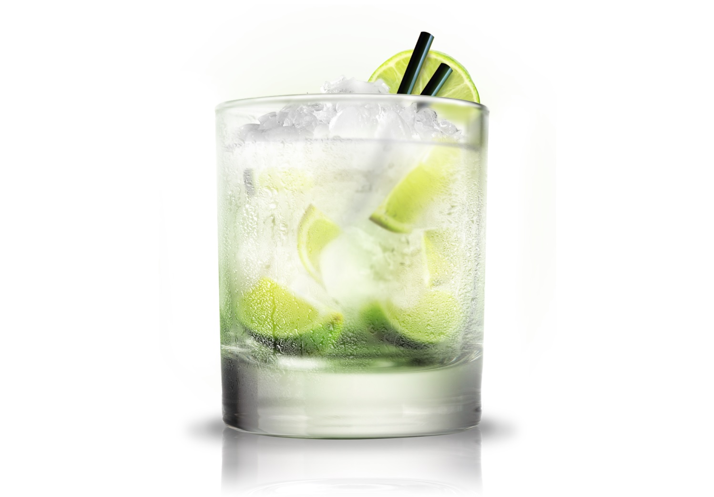

Learn how to make the perfect Caipirinha in easy steps!
With the recent explosion of Cachaça and its cocktail sidekick, the Caipirinha, more and more bartenders and home entertainers are wondering how to make the perfect Caipirinha. How should I cut the limes? Superfine sugar? Can I use simple syrup? Shaken or stirred? Club soda? How long do I muddle? Cachaça? Don't worry, we make it simple!
Caipirinha Ingredients
- 1/2 lime(s)
- 1/2 teaspoon sugar
- 2 ounces cachaca
- old-fashioned glass
Instructions
Slice the lime into 1/2-inch rounds, cube them, and muddle them in an Old-Fashioned glass or small tumbler with the sugar. Add a couple of ice cubes. Pour in the cachaça. Serve with a stirring rod. That's it!Our take on the drink
The mojito's Brazilian cousin, the caipirinha might have been invented merely to serve as a perfect example of the compound French adjective, jolie-laide -- literally, "pretty-ugly." Like a cheekbony, slash-mouthed supermodel, this drink somehow repels and attracts. Cachaça, the raw sugarcane spirit from which it is made, looks like vodka and tastes like it was aged in old truck tires. Mixed with lime, sugar, and ice, however, it intoxicates strangely and doesn't taste half bad.More info on that: Other easy ways of doing it!